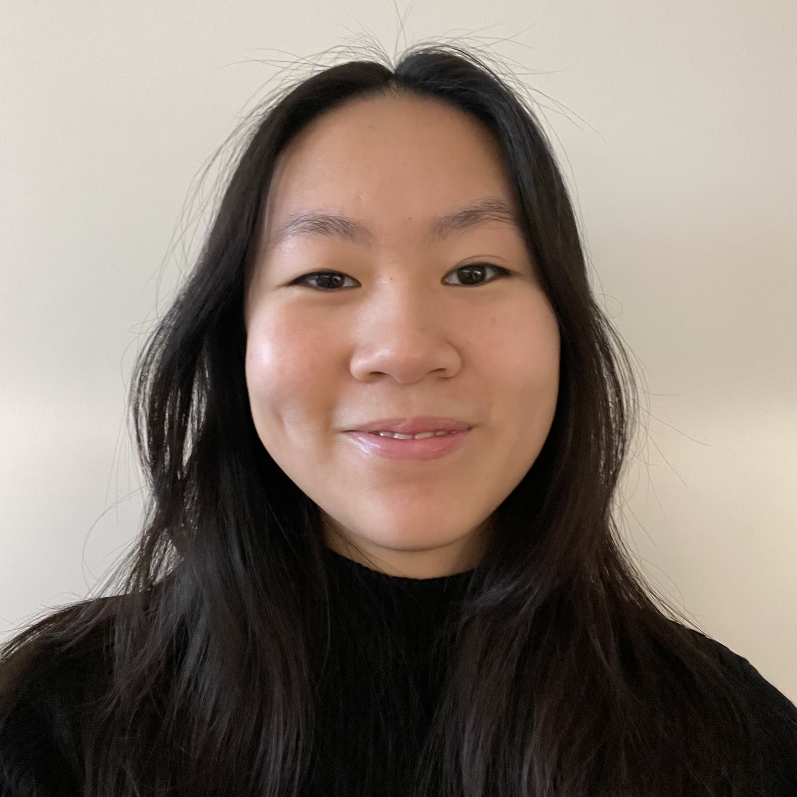

Interests
Agentic AI · LLMs · Enterprise AI
Located
Stockholm · 59°N
Weather
—
Local time
—:—
A short
biography.
IT Product Architect · Dual Board Member · dual winner of NYAS competitions. Based in Stockholm.

IT Product Architect working at the intersection of enterprise IT strategy and product delivery in large-scale Azure environments.
I focus on aligning architectural direction with product execution — supporting roadmap decisions, governance, and cross-organisational initiatives that improve clarity and decision quality across stakeholders. My background includes rotations in data science, cloud engineering, and IT operations through Ericsson's IT Trainee Program, giving me a broad technical foundation across AI, cloud platforms, and transformation work.
I'm particularly strong in bridging strategy and execution, enabling alignment across business and engineering domains. Alongside architectural responsibilities, I build automation and low-code solutions using RPA and the Microsoft Power Platform to drive internal efficiency.
§ Now
IT Product Architect at Ericsson AB — Stockholm.
Driving alignment between enterprise IT strategy and product
execution; co-spokesperson for an enterprise observability
initiative.
§ Education
BSc Computer Science — KTH Royal Institute of Technology, Stockholm. Sep 2021 — Jun 2024
Algorithms · Data structures · Databases · Mathematics · Computer architecture · Machine learning.
§ Skills
- Python
- Java / C
- SQL
- Go
- Assembly
- HTML / CSS / JS
- PowerShell
- PowerBI
- MATLAB
- scikit-learn
- Azure
- RPA · Power Platform
§ Honours
Young Innovation in Times of Crisis — IVA, Royal Swedish Academy of Engineering Sciences (May 2020).
Winner — The Intelligent Homes & Health Challenge, NYAS (Feb 2020).
§ Publications
Rydell, S., Hopkins, N., Al-Khalili Szigyarto, C., Conradt, J. (2024) — Support Vector Machines for High-dimensional and Incomplete Datasets with Few Entries, KTH.
Romanou, A., et al. (2024) — INCLUDE: Evaluating Multilingual Language Understanding with Regional Knowledge, EPFL · Cohere For AI · ETH Zürich · Swiss AI Initiative. (Data contributor)
§ Engagements
Board Member, Pharus Tech AB — since Oct 2020.
Head of Business Events, Malvina KTH — 2023/2024.
Junior Academy Project Leader, NYAS — 2019/2020.